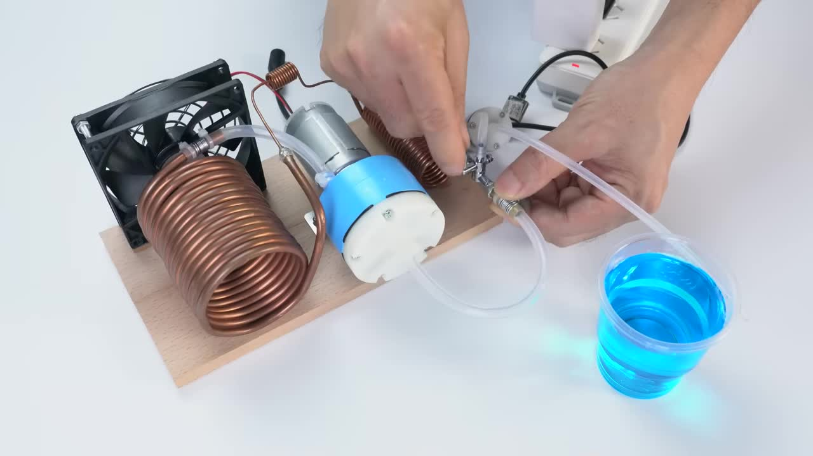

極致降溫 DIY
Mini Refrigeration System Project

這個項目展示了如何使用簡單的直流氣泵、銅管等材料，構建一個小型制冷系統，並實現銅管表面的迅速結霜現象。它基於基礎的蒸氣壓縮制冷循環原理，是一個有趣的物理和工程實驗。
核心亮點 Key Features
- 快速結霜: 在盤管表面實現明顯的低溫效果。
- 簡單材料: 利用易於獲取的組件。
- 動手製作: 親身實踐制冷循環原理。
- 原理演示: 可視化展示製冷過程。
使用的組件 Components Used
直流氣泵
DC Air Pump (Compressor)
規格 (標籤所示): 12V, 壓力 20-23PSI / -50-60KPA
大型銅管盤管
Large Copper Coil (Evaporator)
規格 (外徑 OD): 6.2 mm
小型銅管盤管
Small Copper Coil (Condenser)
規格 (外徑 OD): 約 2.9 mm

細銅管 (毛細管)
Thin Copper Tube (Capillary Tube)

直流風扇
DC Fan
閥門組件
Valve Assembly

軟管與注射器
Tubing & Syringe
軟管規格: 內徑 ID 約 3.7 mm / 外徑 OD 約 6.5 mm
製作步驟詳解 Detailed Steps
1. 準備銅管
使用卡尺測量銅管外徑 (OD 6.2 mm)。將較粗的銅管纏繞在圓柱體（如汽水罐）上，形成較大的盤管（蒸發器）。

將細銅管（OD 約 2.9 mm）也彎曲並截取一小段。
2. 製作毛細管
將細銅管的一端使用小刀或銼刀打磨尖銳。
清理乾淨。
3. 準備閥門與接頭
準備一個帶有閥門的接頭。視頻中還使用了一個鋸掉一端的黃銅接頭 (03:29 處鋸掉)。
將鋸掉的黃銅接頭打磨光滑。

4. 焊接銅管連接
將打磨好的細銅管尖端插入大型盤管（蒸發器）的出氣口，使用焊錫進行焊接連接。
將小型盤管（冷凝器）的一端焊接到閥門組件上。

將黃銅接頭焊接到閥門的另一端。
5. 製作底座並固定氣泵

切割木板並粘合或固定作為整個裝置的底座。

將直流氣泵使用金屬支架和螺絲固定在木板底座上。

6. 連接管路
使用軟管連接氣泵的排氣口 (通常標示 OUT 或 +) 到大型盤管（蒸發器）的入口。
將連接了細管的大型盤管（蒸發器）出口，通過細管連接到小型盤管（冷凝器）的入口（已焊接在閥門上）。
將小型盤管（冷凝器）的出氣端通過軟管連接到閥門。
將閥門的另一個接口（通常是直通的）通過軟管連接回氣泵的進氣口 (通常標示 IN 或 -)。

使用紮帶或金屬絲加固軟管與接頭之間的連接，確保氣密性。
7. 安裝風扇
將直流風扇固定在底座上，使其空氣流動方向對準大型盤管（蒸發器）。

連接風扇電源線到氣泵電源線的相同接頭，使其與氣泵同時啟動。
8. 加註製冷劑與測試
通過閥門組件的加註口，使用注射器將藍色製冷劑液體加註到系統中。注意加註量可能需要根據實際效果調整。
連接電池或電源（如視頻中的電池組）到氣泵和風扇的電源接口。
啟動系統。觀察大型盤管的表面，應會開始出現凝結和結霜現象。
視頻中額外步驟
視頻最後還展示了從打火機中取出火石機構 (06:10)，剝開電線 (06:28)，以及使用白色膠體對部分連接處進行密封 (07:12)。這些步驟在演示的制冷循環主體外，可能用於提高系統的穩定性或解決潛在的漏氣問題，但其在原理演示中的具體作用未明確說明。


成功結霜！
在室溫約 25.5°C、濕度 63.1% 的環境下，大型銅管盤管（蒸發器）表面迅速降溫，空氣中的水蒸氣在其表面凝結並結成了細密的霜層。
這證明了這個迷你蒸氣壓縮制冷系統的基本功能成功實現。
(Placeholder for Data Chart)